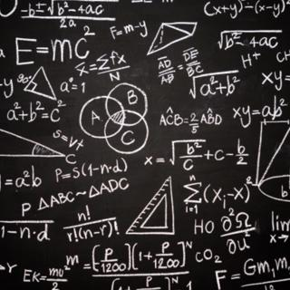

În matematică
recursivitatea se referă la metoda de definire a funcțiilor și a seriilor numerice: o funcție dată recursiv își determină valoarea prin referirea la sine cu alte argumente. În acest caz, sunt posibile două opțiuni. Funcție recursivă finită. Este specificat în așa fel încât, pentru orice argument finit pentru un număr finit de apeluri recursive, acesta să conducă la unul dintre cazurile speciale definite separat calculate fără recursivitate. Aici, fiecare apel recursiv ulterior se face cu un argument mai mic decât unul. Deoarece n, prin definiție, este un număr întreg negativ, după n apeluri recursive, calculul funcției este garantat pentru a ajunge la cazul special, unde recursiunea se oprește. Astfel, în ciuda recursivității definiției, calculul funcției pentru orice argument din domeniu va fi finit.
IN PROGRAMARE
În programare, recursivitatea este un apel către o funcție (procedură) din interiorul său, direct (recursivitate simplă) sau prin alte funcții (recursivitate complexă sau indirectă), de exemplu, funcția A. O funcție de apelare B și funcția B este o funcție A. Numărul de apeluri imbricate către o funcție sau procedură se numește adâncime de recursivitate. Un program recursiv vă permite să descrieți calcule repetitive sau chiar potențial infinite și fără repetarea explicită a părților programului și utilizarea buclelor.În teorie, orice funcție recursivă poate fi înlocuită cu o buclă și o stivă. Cu toate acestea, o astfel de modificare, de regulă, este lipsită de sens, deoarece duce doar la înlocuirea salvării automate a contextului din stiva de apeluri cu executarea manuală a acelorași operații cu același consum de memorie sau mai mult. O excepție poate fi situația în care un algoritm recursiv trebuie modelat într-un limbaj în care recursiunea este interzisă.